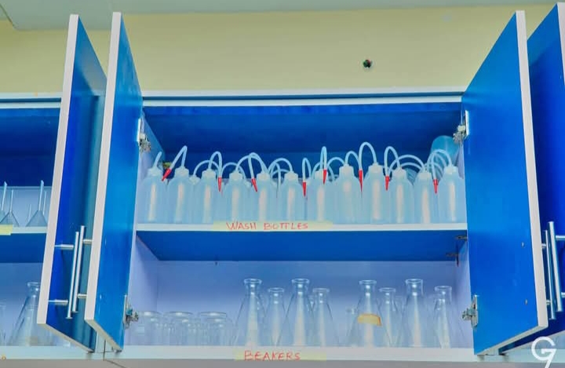
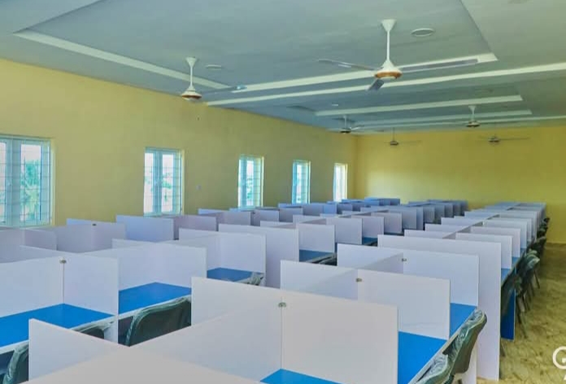
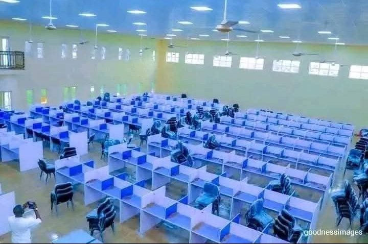
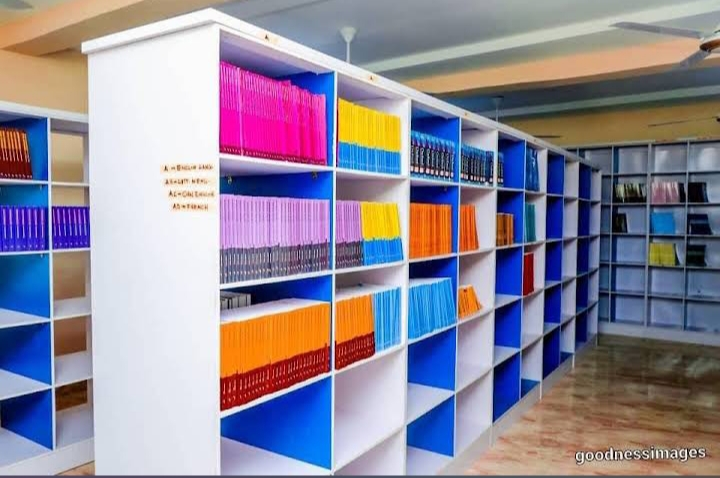
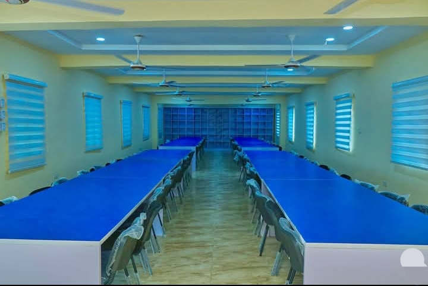
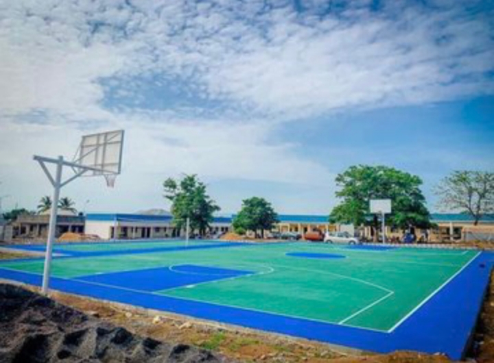
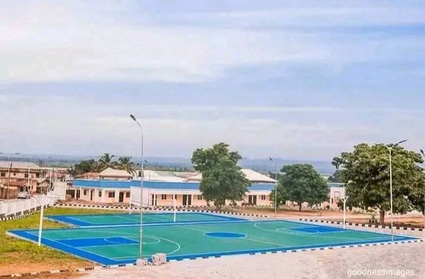
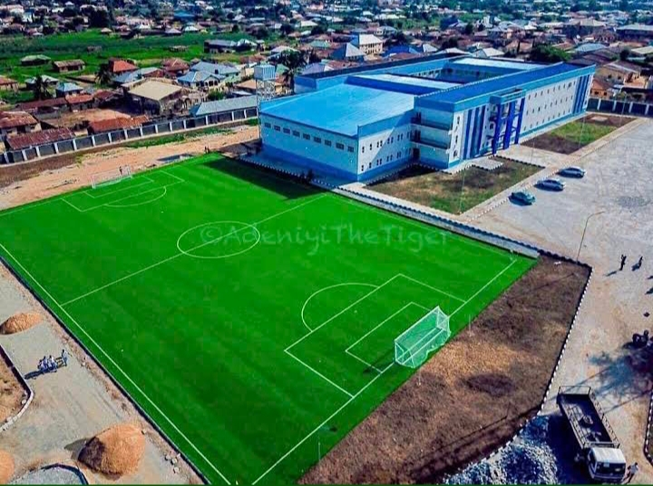

About GYB
The GYB Model Science Secondary School, Adankolo, Lokoja is an ultra-modern public institution established by the administration of former Governor Yahaya Bello.
Originally functioning as the Government Day Secondary School (GDSS) Adankolo, it was completely rebuilt and retrofitted into a premier educational facility to promote an educational revolution in Kogi State.
Background and Development Transformation:
The old, traditional structures of GDSS Adankolo were demolished and rebuilt from the ground up to provide world-class, international-standard facilities to the public.
Inauguration:
The modern complex was completed and officially commissioned as the GYB Model Science Secondary School in the latter half of 2022.
Laboratories:
Fully equipped, high-capacity science laboratories designed to rival those of major tertiary institutions.


Technology:
A massive Computer-Based Test (CBT) center capable of sitting hundreds of students simultaneously.

Library
Our modern library provides students with thousands of books, digital resources and quiet study spaces.


Sports Complex:
Professional-grade courts for football, basketball, volleyball, and lawn tennis to encourage extracurricular development.



Recent History and Legacy Continued Support:
The succeeding administration under Governor Ahmed Ododo has maintained strong support for the institution, conducting unscheduled visits to assess student welfare and continuing the state's free education policies.
Academic Excellence:
The school has cemented a reputation for producing highly skilled students, consistently representing the state and winning various academic competitions, including regional Spelling Bees and Debates.